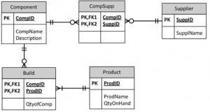
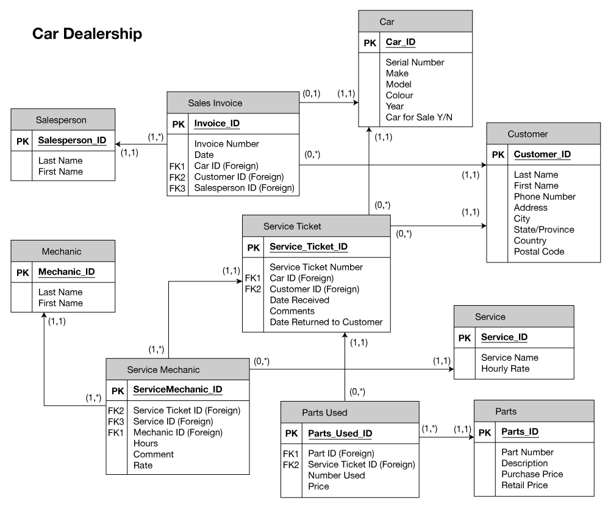

Appendix B: ERD exercises
الملحق B: تمارين مخطط الكيانات والعلاقات
الشركة المصنِّعة (Manufacturer)
تنتج شركة تصنيع منتجات. وتُخزَّن معلومات المنتجات التالية: اسم المنتج ومعرّف المنتج والكمية المتوفرة في المخزون. وهذه المنتجات مكوَّنة من عدد كبير من المكوّنات. ويمكن أن يوفّر كل مكوّن واحد أو أكثر من المورّدين. ويُحتفظ بمعلومات المكوّنات التالية: معرّف المكوّن واسمه ووصفه والمورّدون الذين يوفّرونه والمنتجات التي يُستخدم فيها. واستخدم الشكل B.1 في هذا التمرين.
أنشئ مخطط كيانات وعلاقات (ERD) يوضّح كيفية تتبّع هذه المعلومات.
بيّن أسماء الكيانات والمفاتيح الأساسية (primary keys) والخصائص (attributes) لكل كيان والعلاقات بين الكيانات والتعددية (cardinality).
الافتراضات (Assumptions)
- يمكن أن يوجد مورّد من دون أن يوفّر أي مكوّنات.
- لا يلزم أن يرتبط المكوّن بمورّد.
- لا يلزم أن يرتبط المكوّن بمنتج. فليس كل المكوّنات مستخدمة في المنتجات.
- لا يمكن أن يوجد منتج من دون مكوّنات.
إجابة مخطط الكيانات والعلاقات (ERD Answer)
Component(CompID, CompName, Description) PK=CompID
Product(ProdID, ProdName, QtyOnHand) PK=ProdID
Supplier(SuppID, SuppName) PK = SuppID
CompSupp(CompID, SuppID) PK = CompID, SuppID
Build(CompID, ProdID, QtyOfComp) PK= CompID, ProdID

التمرين 2
وكيل بيع السيارات (Car Dealership)
أنشئ مخطط كيانات وعلاقات (ERD) لوكيل بيع سيارات. وبيع الوكالة السيارات الجديدة والمستعملة، كما تشغّل منشأة خدمة (انظر الشكل B.2). واستنِد تصميمك إلى قواعد الأعمال التالية:
- قد يبيع مندوب البيع (salesperson) سيارات كثيرة، لكن كل سيارة يبيعها مندوب بيع واحد فقط.
- قد يشتري عميل سيارات كثيرة، لكن كل سيارة يشتريها عميل واحد فقط.
- يكتب مندوب البيع فاتورة واحدة عن كل سيارة يبيعها.
- يحصل العميل على فاتورة عن كل سيارة يشتريها.
- قد يأتي العميل لغرض صيانة سيارته فقط؛ أي أنه لا يلزمه شراء سيارة ليُصنَّف عميلًا.
- عندما يأخذ العميل سيارة واحدة أو أكثر للإصلاح أو الصيانة، تُكتب تذكرة خدمة واحدة عن كل سيارة.
- يحتفظ وكيل بيع السيارات بسجل صيانة لكل سيارة خضعت للصيانة. وتشير سجلات الصيانة إلى الرقم التسلسلي للسيارة.
- يمكن أن يعمل على السيارة المُحضَرة للصيانة عدة ميكانيكيين، وقد يعمل كل ميكانيكي على سيارات كثيرة.
- قد تحتاج السيارة الخاضعة للصيانة إلى قطع غيار وقد لا تحتاجها (مثلًا، ضبط الكاربيراتور أو تنظيف فوهة حقن الوقود لا يتطلب توفير قطع غيار جديدة).
إجابة مخطط الكيانات والعلاقات (ERD Answer)
